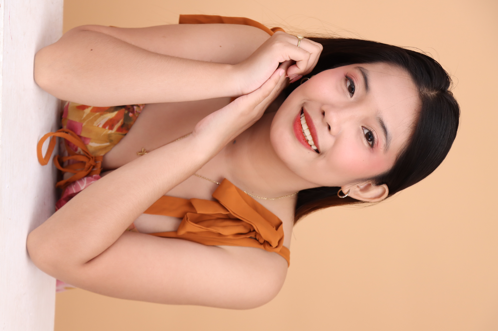
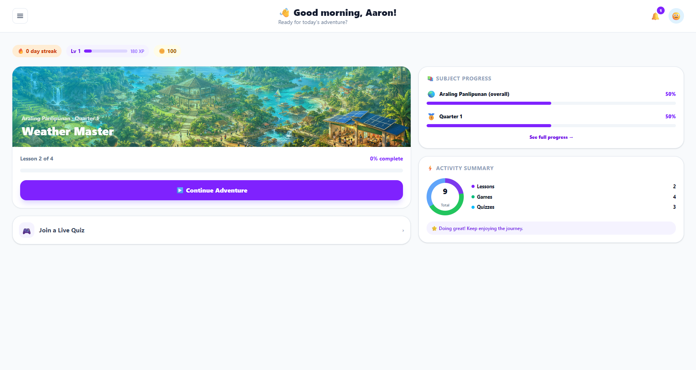
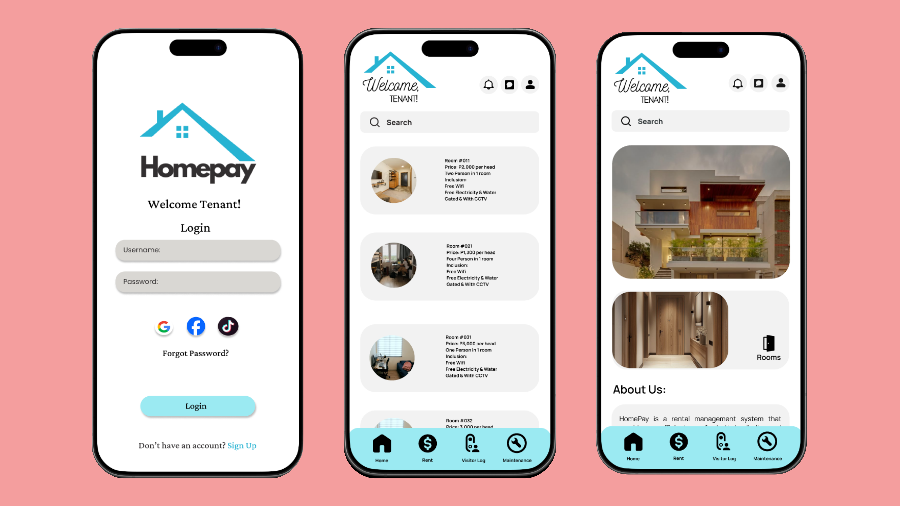
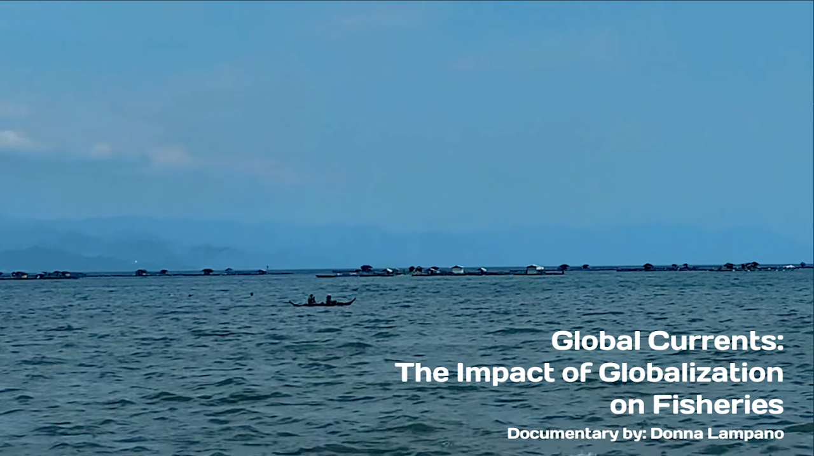

UI/UX Design
Designing clear screens, organizing user flows, and shaping interfaces that are simple, readable, and pleasant to use.
An Information Systems student who enjoys creating thoughtful designs, organized documentation, research-based outputs, and visually clear academic project presentations.

Profile
I am Donna M. Lampano, an Information Systems student focused on UI/UX design, documentation, research, and creative academic outputs. My college work includes visual editing, film production, documentary research, Figma prototypes, service-based app concepts, and capstone collaboration.
I enjoy helping projects become clearer, more presentable, and easier to understand. My work often centers on organizing information, improving visual flow, supporting research, and shaping user-friendly interfaces.
Strengths
My focus is on making academic outputs feel clear, visually organized, and user-centered.
Designing clear screens, organizing user flows, and shaping interfaces that are simple, readable, and pleasant to use.
Helping collect, organize, and present information clearly for academic outputs, documentaries, proposals, and system projects.
Preparing structured write-ups, project descriptions, presentation content, and supporting documents for collaborative academic work.
Working with visuals, editing, layout, mood, and presentation style to make project outputs look more polished and understandable.
Selected Works
These projects are arranged based on Donna's strongest portfolio angle: UI/UX, research communication, visual presentation, and organized academic documentation.

Educational interface support, documentation, and student-friendly design thinking.
PoliPlay is an ongoing capstone project designed to support Grade 5 Araling Panlipunan learning through gamified lessons, live quizzes, vocabulary support, progress tracking, and teacher-managed learning materials.

User interface planning, screen organization, and documentation support.
HomePay was designed to help boarding house owners and tenants manage rent concerns, maintenance requests, tenant information, visitor logs, and reports in a more organized way.

A customer-to-vendor planning experience for events and services.
PlanoRa is an app prototype that connects customers planning events with vendors offering catering, photography, venue, decorations, hosting, and event packages.

Research communication through documentary storytelling.
A documentary project that explored how globalization affects fisheries, local livelihood, market systems, and sustainable development.

A creative media project focused on teamwork, storytelling, and production experience.
A first-year comedy film project created for a school film festival, building teamwork, storytelling, and media production skills.
College Journey
Started with visual and media-based outputs while learning the basics of programming and academic teamwork.
Moved into research communication, documentary work, and Figma-based system interface planning.
Contributed to larger prototypes and capstone work through UI/UX support, research, and documentation.
Working Style
Understand the project goal, topic, users, and required output.
Arrange ideas, content, references, and project information clearly.
Create simple layouts, flows, visuals, and interface directions.
Improve the output based on feedback, clarity, and presentation needs.
Toolkit
These tools support Donna's work in UI/UX planning, research writing, creative editing, academic documentation, and presentation design.
Contact
Reach out through email, Facebook, or GitHub for academic collaboration, project discussions, design support, research work, and documentation-related opportunities.
UI/UX planning, project documentation, research presentation, Figma prototypes, and academic creative outputs.